library(readxl)
library(dplyr)
library(ggplot2)
library(lubridate)
library(tidyr)Analyse Wassertiefen
1 Genutzte Packages
2 Daten einlesen
Wassertiefen <- read_excel("Tabelle Wassertiefe.xlsx")
summary(Wassertiefen) Datum Standort Messpunkt
Min. :2025-05-22 00:00:00.00 Length:153 Min. :1.000
1st Qu.:2025-06-24 00:00:00.00 Class :character 1st Qu.:1.000
Median :2025-07-23 00:00:00.00 Mode :character Median :2.000
Mean :2025-07-27 12:42:21.18 Mean :2.111
3rd Qu.:2025-08-31 00:00:00.00 3rd Qu.:3.000
Max. :2025-09-29 00:00:00.00 Max. :4.000
ID Wassertiefe
Length:153 Min. : 0.00
Class :character 1st Qu.: 4.00
Mode :character Median :11.00
Mean :12.13
3rd Qu.:18.00
Max. :40.00 str(Wassertiefen)tibble [153 × 5] (S3: tbl_df/tbl/data.frame)
$ Datum : POSIXct[1:153], format: "2025-05-22" "2025-05-22" ...
$ Standort : chr [1:153] "MT" "MT" "MN" "MN" ...
$ Messpunkt : num [1:153] 1 2 1 2 3 1 2 3 4 1 ...
$ ID : chr [1:153] "MT1" "MT2" "MN1" "MN2" ...
$ Wassertiefe: num [1:153] 19 6.5 20.5 10 9 18 19 10 0 24 ...class(Wassertiefen$Datum)[1] "POSIXct" "POSIXt" # Datum als Date konvertieren
Wassertiefen$Datum <- as.Date(Wassertiefen$Datum)
str(Wassertiefen)tibble [153 × 5] (S3: tbl_df/tbl/data.frame)
$ Datum : Date[1:153], format: "2025-05-22" "2025-05-22" ...
$ Standort : chr [1:153] "MT" "MT" "MN" "MN" ...
$ Messpunkt : num [1:153] 1 2 1 2 3 1 2 3 4 1 ...
$ ID : chr [1:153] "MT1" "MT2" "MN1" "MN2" ...
$ Wassertiefe: num [1:153] 19 6.5 20.5 10 9 18 19 10 0 24 ...class(Wassertiefen$Datum)[1] "Date"3 Auswertung
3.1 Statistische Kennzahlen
# Statistische Kennzahlen pro Messpunkt und Standort
Kennzahlen_messpunkt <- Wassertiefen %>%
group_by(Standort, Messpunkt) %>%
summarise(
Mittelwert = mean(Wassertiefe, na.rm = TRUE),
Median = median(Wassertiefe, na.rm = TRUE),
Std = sd(Wassertiefe, na.rm = TRUE),
Min = min(Wassertiefe, na.rm = TRUE),
Max = max(Wassertiefe, na.rm = TRUE),
Range = max(Wassertiefe, na.rm = TRUE) - min(Wassertiefe, na.rm = TRUE),
)`summarise()` has grouped output by 'Standort'. You can override using the
`.groups` argument.Kennzahlen_messpunkt# A tibble: 9 × 8
# Groups: Standort [3]
Standort Messpunkt Mittelwert Median Std Min Max Range
<chr> <dbl> <dbl> <dbl> <dbl> <dbl> <dbl> <dbl>
1 L 1 15.8 17 8.14 1 29 28
2 L 2 12.1 12 6.92 2 24 22
3 L 3 9.5 9 7.31 0 26.5 26.5
4 L 4 2.35 0 3.56 0 9.5 9.5
5 MN 1 22.1 20.5 7.98 10 40 30
6 MN 2 8.35 9 6.98 0 20.5 20.5
7 MN 3 9.85 9 8.28 0 25 25
8 MT 1 19.3 17 6.80 12 40 28
9 MT 2 9.85 8 9.19 0 35 35 # Statistische Kennzahlen pro Standort
Kennzahlen_standort <- Wassertiefen %>%
#filter(ID != "L4") %>%
group_by(Standort) %>%
summarise(
Mittelwert = mean(Wassertiefe, na.rm = TRUE),
Median = median(Wassertiefe, na.rm = TRUE),
Std = sd(Wassertiefe, na.rm = TRUE),
Min = min(Wassertiefe, na.rm = TRUE),
Max = max(Wassertiefe, na.rm = TRUE),
Range = max(Wassertiefe, na.rm = TRUE) - min(Wassertiefe, na.rm = TRUE)
)
Kennzahlen_standort# A tibble: 3 × 7
Standort Mittelwert Median Std Min Max Range
<chr> <dbl> <dbl> <dbl> <dbl> <dbl> <dbl>
1 L 9.92 9 8.21 0 29 29
2 MN 13.5 12 9.84 0 40 40
3 MT 14.6 15 9.30 0 40 403.1.1 Wasserstandsschwankungen
# Mittelwerte pro Tag/ pro Standort berechnen
WT_mittel <- Wassertiefen %>%
group_by(Datum, Standort) %>%
summarise(WT_mean = mean(Wassertiefe, na.rm = TRUE)) %>%
ungroup()`summarise()` has grouped output by 'Datum'. You can override using the
`.groups` argument.# welcher Standort hat die größten Wasserstandsschwankungen?
# Standardabweichung = wie stark der Wasserstand typischerweise um seinen Mittelwert schwankt
# Spannweite des Wasserstands = extremste Unterschiede zwischen dem höchsten und niedrigsten gemessenen Wasserstand
# für die einzelnen Messpunkte auch aus den Kennzahlen_messpunkt ersichtlich
#Schwankung pro Standort (über Tagesmittelwerte)
WT_var_st <- WT_mittel %>%
group_by(Standort) %>%
summarise(
sd_WT = sd(WT_mean, na.rm = TRUE),
range_WT = max(WT_mean, na.rm = TRUE) - min(WT_mean, na.rm = TRUE)
) %>%
arrange(desc(sd_WT))
WT_var_st# A tibble: 3 × 3
Standort sd_WT range_WT
<chr> <dbl> <dbl>
1 MN 7.64 25
2 MT 7.54 30.5
3 L 6.16 21.43.1.2 Häufigkeit der Wasserstände
# welcher Standort hat die meisten trocken gefallenen Tage, welcher die wenigsten (= Beständigkeit des Gewässers/Wasserspiegel)
WT_trocken_mp <- Wassertiefen %>%
group_by(Standort, Messpunkt) %>%
summarise(
trockene_Tage = sum(Wassertiefe <= 1, na.rm = TRUE),
gesamt_Messungen = n(),
anteil_trocken = trockene_Tage / gesamt_Messungen
) %>%
arrange(Standort, desc(trockene_Tage))`summarise()` has grouped output by 'Standort'. You can override using the
`.groups` argument.WT_trocken_mp# A tibble: 9 × 5
# Groups: Standort [3]
Standort Messpunkt trockene_Tage gesamt_Messungen anteil_trocken
<chr> <dbl> <int> <int> <dbl>
1 L 4 10 17 0.588
2 L 3 3 17 0.176
3 L 1 1 17 0.0588
4 L 2 0 17 0
5 MN 2 4 17 0.235
6 MN 3 3 17 0.176
7 MN 1 0 17 0
8 MT 2 4 17 0.235
9 MT 1 0 17 0 # Histogramm zur Häufigkeit der Wasserstände je Standort
ggplot(Wassertiefen, aes(x = Wassertiefe, fill = Standort)) +
geom_histogram(binwidth = 5, alpha = 0.7) +
facet_wrap(~Standort) +
theme_minimal() +
labs(title = "Verteilung der Wasserstände pro Standort",
x = "Wasserstand (cm)",
y = "Anzahl der Messungen")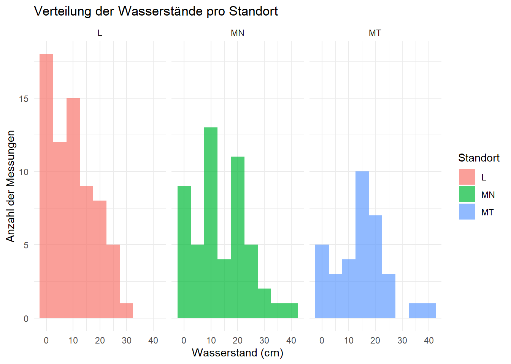
# Histogramm zur Häufigkeit der Wasserstände je Standort ohne Messpunkt 4 bei Lihtenau
ggplot(
Wassertiefen %>%
filter(!(Standort == "L" & Messpunkt == 4)) %>%
mutate(Standort = factor(Standort, levels = c("MT", "MN", "L"))),
aes(x = Wassertiefe, fill = Standort)
) +
geom_histogram(binwidth = 5, alpha = 0.7) +
facet_wrap(~Standort) +
labs(
title = "",
x = "Wasserstand (cm)",
y = "Anzahl der Messungen",
fill = "Fläche"
) +
scale_fill_manual(
values = c(
"MT" = "#D55E00",
"MN" = "#6495ED",
"L" = "#006400"
),
labels = c(
"MT" = "1",
"MN" = "2",
"L" = "3"
)
) +
theme(
axis.title.x = element_text(size = 16),
axis.title.y = element_text(size = 16),
axis.text.x = element_text(size = 14),
axis.text.y = element_text(size = 14),
legend.title = element_text(size = 15),
legend.text = element_text(size = 14),
panel.grid.major = element_line(color = "grey75"),
panel.grid.minor = element_line(color = "grey85"),
axis.ticks = element_blank(),
panel.background = element_rect(fill = "white", color = NA),
strip.background = element_blank(), # graue Balken entfernen
strip.text = element_blank() # MT/MN/L entfernen
)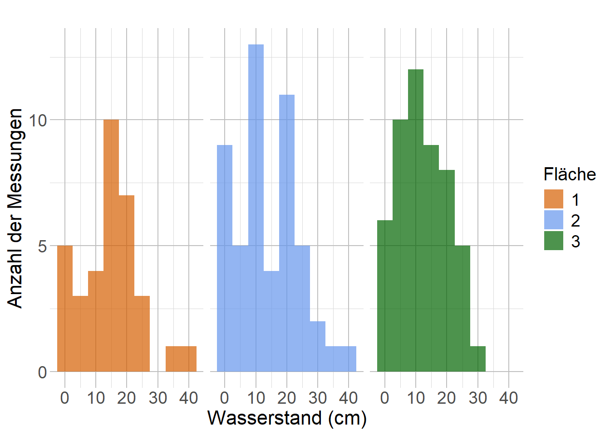
# Histogramm zur Häufigkeit der Wasserstände je Messpunkt und Standort
Wassertiefen$Standort <- as.factor(Wassertiefen$Standort)
Wassertiefen$Messpunkt <- as.factor(Wassertiefen$Messpunkt)
standort_L <- Wassertiefen %>%
filter(Standort == "L")
standort_L <- Wassertiefen %>%
filter(Standort == "L", Messpunkt != "4")#ohne Messpunkt 4 (verzerrt Daten)
standort_MN <- Wassertiefen %>%
filter(Standort == "MN")
standort_MT <- Wassertiefen %>%
filter(Standort == "MT")
ggplot(standort_MT, aes(x = Wassertiefe, fill = factor(Messpunkt))) +
geom_histogram(binwidth = 5, alpha = 0.7) +
facet_wrap(~Messpunkt) +
labs(
title = "",
x = "Wasserstand (cm)",
y = "Anzahl Messungen",
fill = "Messstelle"
) +
scale_fill_manual(
values = c(
"1" = "#F8766D",
"2" = "#7CAE00",
"3" = "#00BFC4",
"4" = "#C77CFF"
)
) +
theme(
axis.title.x = element_text(size = 16),
axis.title.y = element_text(size = 16),
axis.text.x = element_text(size = 14),
axis.text.y = element_text(size = 14),
legend.title = element_text(size = 15),
legend.text = element_text(size = 14),
panel.grid.major = element_line(color = "grey75"),
panel.grid.minor = element_line(color = "grey85"),
axis.ticks = element_blank(),
panel.background = element_rect(fill = "white", color = NA),
strip.background = element_blank(),
strip.text = element_blank()
)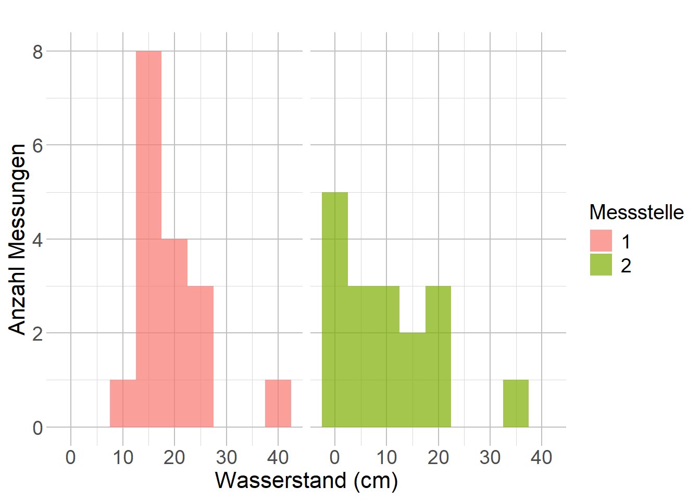
#ggsave(
# "Histogramm_Häufigkeit der Wasserstände_Fläche 3 (ohne MS4).png",
# width = 10,
# height = 6,
# dpi = 300
#)3.2 Jahresverlauf der Wassertiefe (MT vs MN vs L)
# Liniendiagramm - Jahresverlauf
# Zeitlicher Verlauf der mittleren Wassertiefe nach Standort
ggplot(WT_mittel, aes(x = Datum, y = WT_mean, color = Standort)) +
geom_line(linewidth = 1) +
#geom_point(size = 2) +
labs(
title = "",
x = "",
y = "Mittlere Wassertiefe (cm)",
color = "Fläche"
) +
scale_color_manual(
breaks = c("MT", "MN", "L"),
values = c(
"MT" = "#D55E00",
"MN" = "#6495ED",
"L" = "#006400"
),
labels = c(
"MT" = "1",
"MN" = "2",
"L" = "3"
)
) +
theme(
axis.title.x = element_text(size = 16),
axis.title.y = element_text(size = 16),
axis.text.x = element_text(angle = 45, hjust = 1, size = 14),
axis.text.y = element_text(size = 14),
legend.title = element_text(size = 15),
legend.text = element_text(size = 14),
panel.grid.major = element_line(color = "grey75"),
panel.grid.minor = element_line(color = "grey85"),
axis.ticks = element_blank(),
panel.background = element_rect(fill = "white", color = NA)
) +
scale_x_date(
date_breaks = "1 month",
date_labels = "%b %Y"
)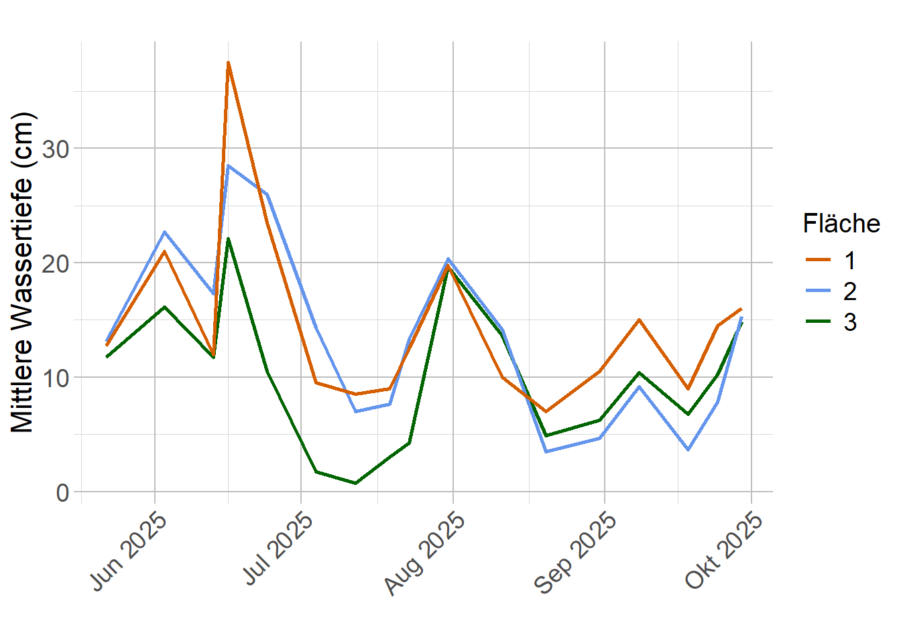
#ggsave(
#"Zeitlicher Verlauf der mittleren Wassertiefe nach Standort.png",
#width = 10,
#height = 6,
#dpi = 300
#)3.3 Unterschiede zwischen den Standorten
# Boxplot pro Standort, Mittelwert der verschiedenen Messpunkte
ggplot(WT_mittel, aes(x = factor(Standort,levels = c("MT", "MN", "L")), y = WT_mean, fill = Standort)) +
geom_boxplot() +
labs(
title = "",
x = "Fläche",
y = "Mittlere Wassertiefe (cm)"
) +
scale_x_discrete(labels = c(
"MT" = "1",
"MN" = "2",
"L" = "3"
)) +
scale_fill_manual(
values = c(
"MT" = "#D55E00",
"MN" = "#6495ED",
"L" = "#006400"
)
) +
theme(
axis.title.x = element_text(size = 16),
axis.title.y = element_text(size = 16),
axis.text.x = element_text(size = 14),
axis.text.y = element_text(size = 14),
legend.position = "none",
panel.grid.major = element_line(color = "grey75"),
panel.grid.minor = element_line(color = "grey85"),
axis.ticks = element_blank(),
panel.background = element_rect(fill = "white", color = NA)
)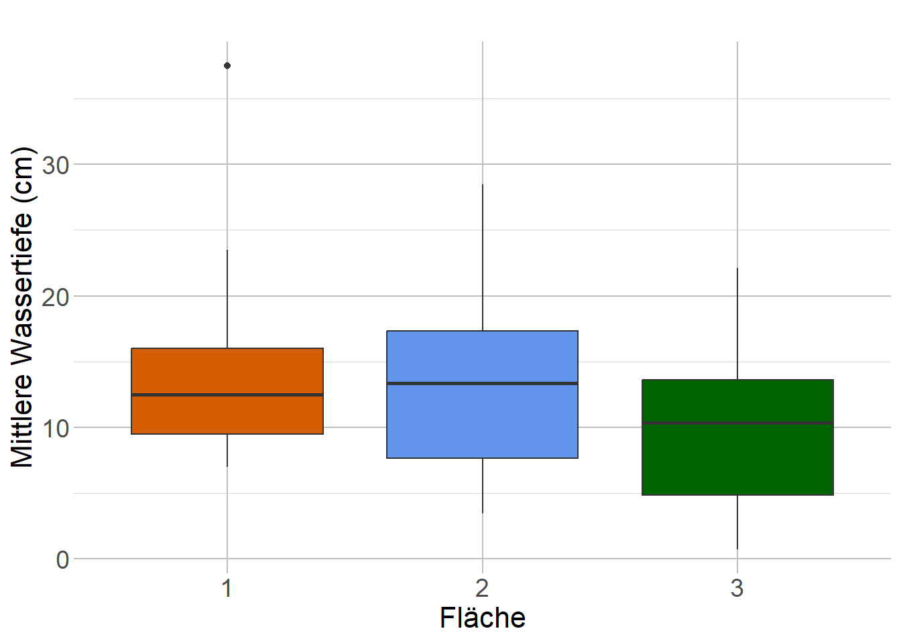
#ggsave(
#"Boxplot_Vergleich der Flächen.png",
#width = 10,
#height = 6,
#dpi = 300
#)# Boxplot pro Standort, Messpunkte farblich unterscheiden
# Vergleich der Wassertiefen nach Standort und Messstelle (Mai–Sep 2025)
ggplot(Wassertiefen,
aes(x = factor(Standort, levels = c("MT", "MN", "L")),
y = Wassertiefe,
fill = factor(Messpunkt))) +
geom_boxplot(position = position_dodge(0.8)) +
labs(
title = "",
x = "Fläche",
y = "Wassertiefe (cm)",
fill = "Messstelle"
) +
scale_x_discrete(labels = c(
"MT" = "1",
"MN" = "2",
"L" = "3"
)) +
theme(
axis.title.x = element_text(size = 16),
axis.title.y = element_text(size = 16),
axis.text.x = element_text(size = 14),
axis.text.y = element_text(size = 14),
legend.title = element_text(size = 15),
legend.text = element_text(size = 14),
panel.grid.major = element_line(color = "grey75"),
panel.grid.minor = element_line(color = "grey85"),
axis.ticks = element_blank(),
panel.background = element_rect(fill = "white", color = NA)
)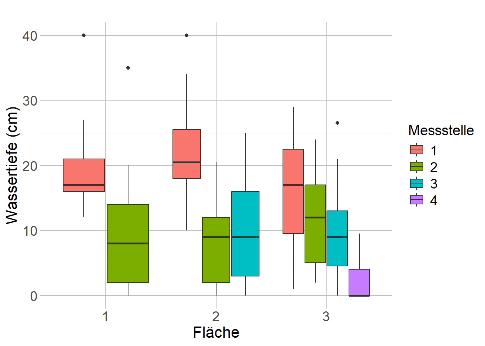
#ggsave(
#"Boxplot_Vergleich der Wassertiefen nach Standort und Messstelle.png",
#width = 10,
#height = 6,
#dpi = 300
#)3.4 Unterschiede innerhalb eines Standortes
#### Jahresverlauf - Liniendiagramm
plot_lin1 <- function(df, st, titel = NULL) {
# Daten nach Standort filtern
df_sub1 <- df %>% filter(Standort == st)
ggplot(df_sub1, aes(x = Datum, y = Wassertiefe, color = factor(Messpunkt))) +
geom_line(linewidth = 1) +
#geom_point(size = 2) +
labs(
title = titel,
x = "",
y = "Mittlere Wassertiefe (cm)",
color = "Messstelle"
) +
scale_x_date(
date_breaks = "1 month",
date_labels = "%b %Y"
) +
scale_color_manual(
values = c(
"1" = "#F8766D",
"2" = "#7CAE00",
"3" = "#00BFC4",
"4" = "#C77CFF"
)
) +
theme(
axis.title.x = element_text(size = 16),
axis.title.y = element_text(size = 16),
axis.text.x = element_text(angle = 45, hjust = 1, size = 14),
axis.text.y = element_text(size = 14),
legend.title = element_text(size = 15),
legend.text = element_text(size = 14),
panel.grid.major = element_line(color = "grey75"),
panel.grid.minor = element_line(color = "grey85"),
axis.ticks = element_blank(),
panel.background = element_rect(fill = "white", color = NA)
)
}#### Unterschiede zw. den Messstellen - Boxplot
plot_box <- function(df, st, titel=NULL, x_name=NULL) {
# Daten filtern
df_sub2 <- df %>% filter(Standort == st)
# x-Achsenname setzen, falls NULL
if (is.null(x_name)) {
x_name <- "Messpunkt" # Standard
}
ggplot(df_sub2, aes(x = factor(Messpunkt), y = Wassertiefe, fill = factor(Messpunkt))) +
geom_boxplot() +
labs(
title = titel,
x = x_name, # hier wird der flexible Name verwendet
y = "Wassertiefe (cm)",
fill = "Messstelle"
) +
scale_fill_manual(
values = c(
"1" = "#F8766D",
"2" = "#7CAE00",
"3" = "#00BFC4",
"4" = "#C77CFF"
)
) +
theme(
axis.title.x = element_text(size = 16),
axis.title.y = element_text(size = 16),
axis.text.x = element_text(size = 14),
axis.text.y = element_text(size = 14),
legend.title = element_text(size = 15),
legend.text = element_text(size = 14),
panel.grid.major = element_line(color = "grey75"),
panel.grid.minor = element_line(color = "grey85"),
axis.ticks = element_blank(),
panel.background = element_rect(fill = "white", color = NA)
)
}Meusebach trocken
plot_lin1(Wassertiefen, "MT", titel="")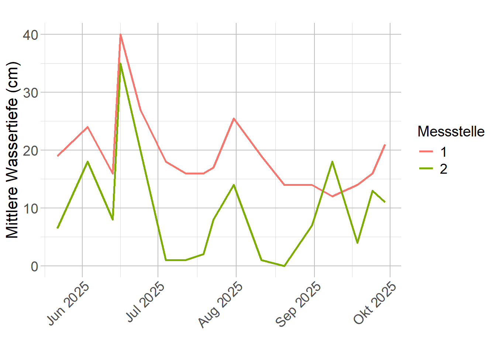
# Boxplot
plot_box(Wassertiefen, st="MT",
titel="",
x_name="Meusebach trocken")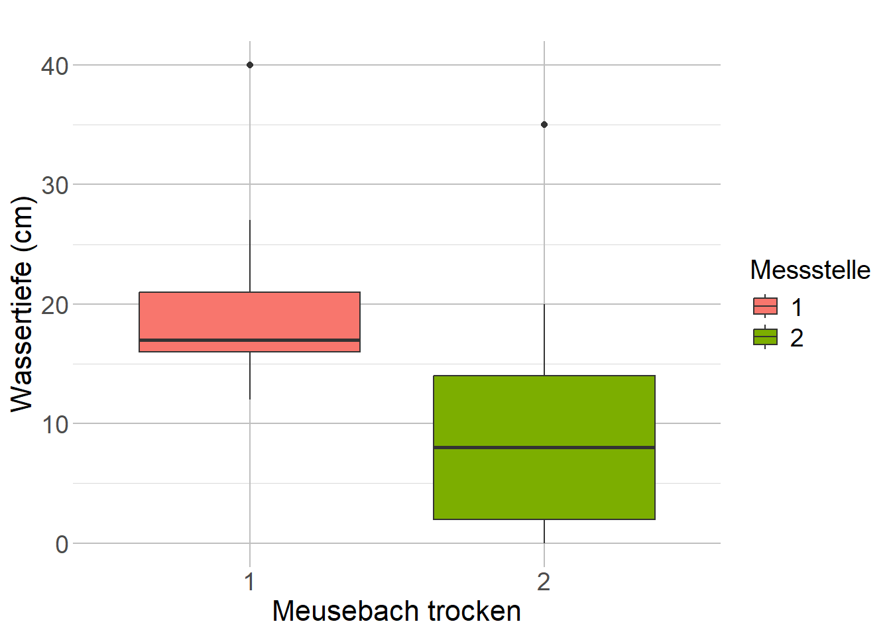
Meusebach nass
# Liniendiagramm
plot_lin1(Wassertiefen, "MN", titel="")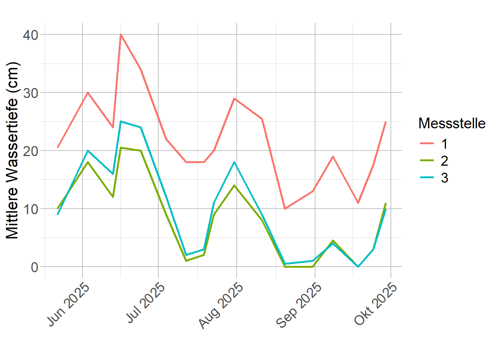
# Boxplot
plot_box(Wassertiefen, st="MN",
titel="",
x_name="Meusebach nass")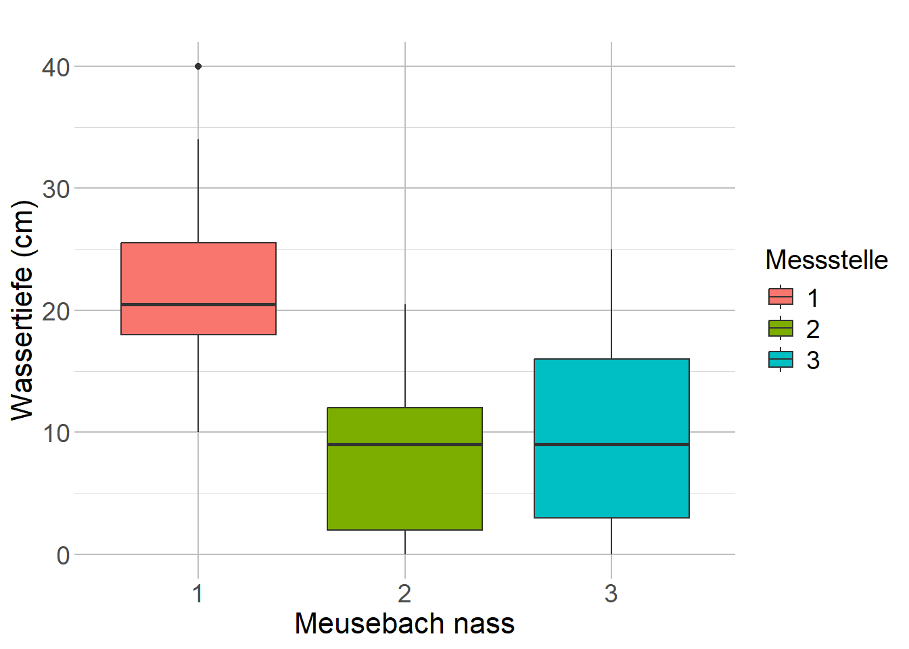
Lichtenau
# Liniendiagramm
plot_lin1(Wassertiefen, "L", titel="")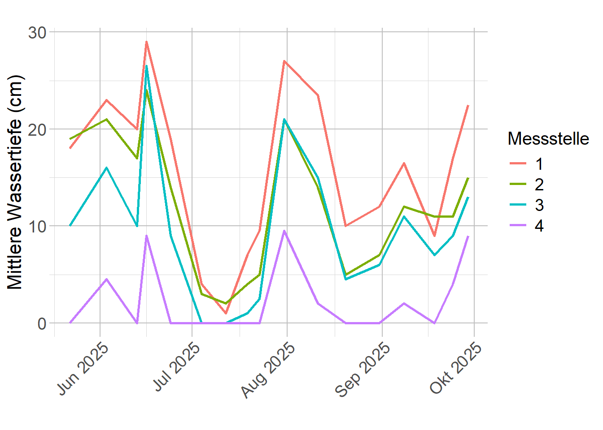
# Boxplot
plot_box(Wassertiefen, st="L",
titel="",
x_name="Lichtenau")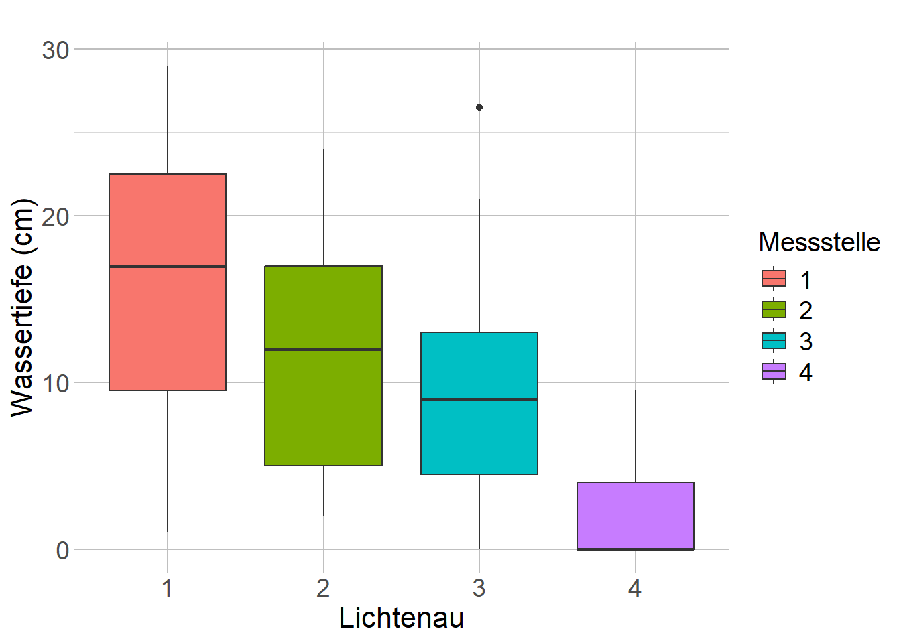